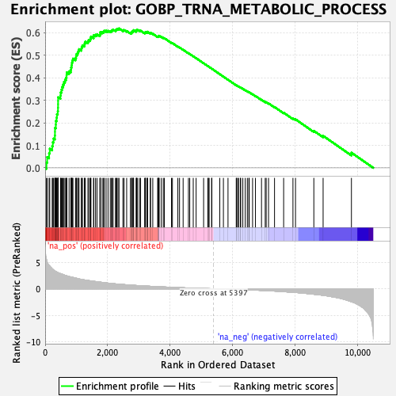
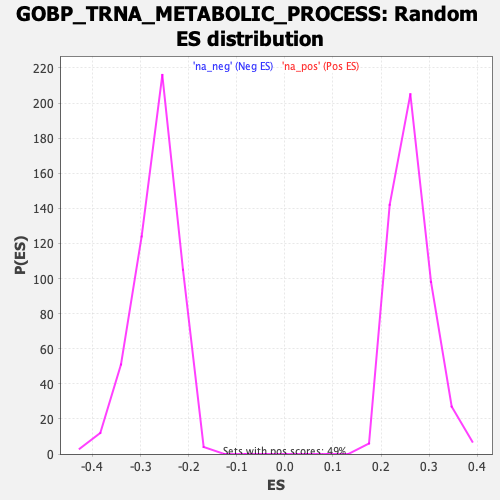

| Dataset | qlf.KOd4vsWTd4_gsea_score |
| Phenotype | NoPhenotypeAvailable |
| Upregulated in class | na_pos |
| GeneSet | GOBP_TRNA_METABOLIC_PROCESS |
| Enrichment Score (ES) | 0.6196721 |
| Normalized Enrichment Score (NES) | 2.3552413 |
| Nominal p-value | 0.0 |
| FDR q-value | 0.0 |
| FWER p-Value | 0.0 |

| SYMBOL | RANK IN GENE LIST | RANK METRIC SCORE | RUNNING ES | CORE ENRICHMENT | |
|---|---|---|---|---|---|
| 1 | PUS1 | 44 | 5.471 | 0.0240 | Yes |
| 2 | METTL1 | 65 | 5.025 | 0.0479 | Yes |
| 3 | PUS7 | 126 | 4.428 | 0.0650 | Yes |
| 4 | TRMT61A | 148 | 4.282 | 0.0850 | Yes |
| 5 | NSUN2 | 226 | 3.772 | 0.0970 | Yes |
| 6 | WDR4 | 246 | 3.672 | 0.1141 | Yes |
| 7 | RPP14 | 270 | 3.533 | 0.1301 | Yes |
| 8 | THUMPD1 | 312 | 3.367 | 0.1435 | Yes |
| 9 | POP1 | 315 | 3.354 | 0.1606 | Yes |
| 10 | TRMT6 | 316 | 3.352 | 0.1779 | Yes |
| 11 | PUSL1 | 342 | 3.275 | 0.1924 | Yes |
| 12 | EXOSC7 | 344 | 3.257 | 0.2091 | Yes |
| 13 | EXOSC2 | 368 | 3.180 | 0.2232 | Yes |
| 14 | TRMT5 | 377 | 3.157 | 0.2388 | Yes |
| 15 | FARSB | 405 | 3.064 | 0.2519 | Yes |
| 16 | FARSA | 412 | 3.040 | 0.2670 | Yes |
| 17 | DUS1L | 414 | 3.033 | 0.2826 | Yes |
| 18 | ELP3 | 415 | 3.032 | 0.2982 | Yes |
| 19 | RPP30 | 416 | 3.028 | 0.3138 | Yes |
| 20 | RPP38 | 491 | 2.850 | 0.3214 | Yes |
| 21 | ELAC2 | 498 | 2.841 | 0.3354 | Yes |
| 22 | DPH3 | 523 | 2.801 | 0.3476 | Yes |
| 23 | TRMT11 | 545 | 2.766 | 0.3598 | Yes |
| 24 | TSEN2 | 576 | 2.674 | 0.3707 | Yes |
| 25 | TRMT1 | 602 | 2.620 | 0.3818 | Yes |
| 26 | NAT10 | 637 | 2.531 | 0.3915 | Yes |
| 27 | ELP5 | 669 | 2.476 | 0.4013 | Yes |
| 28 | TRMT10A | 686 | 2.444 | 0.4124 | Yes |
| 29 | RPPH1 | 692 | 2.440 | 0.4245 | Yes |
| 30 | POLR3K | 767 | 2.299 | 0.4292 | Yes |
| 31 | DUS4L | 823 | 2.227 | 0.4354 | Yes |
| 32 | RTCB | 831 | 2.219 | 0.4461 | Yes |
| 33 | QTRT1 | 848 | 2.198 | 0.4559 | Yes |
| 34 | SSB | 856 | 2.190 | 0.4665 | Yes |
| 35 | DDX1 | 870 | 2.169 | 0.4765 | Yes |
| 36 | TRMT10C | 891 | 2.133 | 0.4855 | Yes |
| 37 | DTWD2 | 972 | 2.024 | 0.4882 | Yes |
| 38 | AARSD1 | 991 | 2.003 | 0.4968 | Yes |
| 39 | TARS2 | 1004 | 1.981 | 0.5059 | Yes |
| 40 | RPP25L | 1042 | 1.925 | 0.5122 | Yes |
| 41 | THG1L | 1064 | 1.878 | 0.5199 | Yes |
| 42 | GATC | 1085 | 1.852 | 0.5275 | Yes |
| 43 | CTU2 | 1159 | 1.770 | 0.5296 | Yes |
| 44 | TYW3 | 1170 | 1.755 | 0.5377 | Yes |
| 45 | POP5 | 1194 | 1.735 | 0.5444 | Yes |
| 46 | RARS2 | 1255 | 1.673 | 0.5472 | Yes |
| 47 | GTF3C6 | 1267 | 1.660 | 0.5547 | Yes |
| 48 | EARS2 | 1287 | 1.640 | 0.5613 | Yes |
| 49 | TRNT1 | 1371 | 1.564 | 0.5614 | Yes |
| 50 | POLR2L | 1391 | 1.549 | 0.5675 | Yes |
| 51 | ADAT1 | 1438 | 1.505 | 0.5709 | Yes |
| 52 | CARS2 | 1456 | 1.491 | 0.5769 | Yes |
| 53 | TSEN15 | 1467 | 1.485 | 0.5836 | Yes |
| 54 | TRUB1 | 1553 | 1.407 | 0.5827 | Yes |
| 55 | LAGE3 | 1555 | 1.407 | 0.5898 | Yes |
| 56 | DUS3L | 1613 | 1.365 | 0.5913 | Yes |
| 57 | EXOSC3 | 1661 | 1.327 | 0.5936 | Yes |
| 58 | EXOSC9 | 1753 | 1.263 | 0.5914 | Yes |
| 59 | LSM6 | 1765 | 1.254 | 0.5968 | Yes |
| 60 | GRSF1 | 1766 | 1.252 | 0.6032 | Yes |
| 61 | DTD2 | 1826 | 1.204 | 0.6037 | Yes |
| 62 | MARS2 | 1870 | 1.171 | 0.6056 | Yes |
| 63 | NARS2 | 1894 | 1.157 | 0.6094 | Yes |
| 64 | RPP40 | 1952 | 1.113 | 0.6096 | Yes |
| 65 | POP4 | 2014 | 1.070 | 0.6092 | Yes |
| 66 | EXOSC8 | 2085 | 1.018 | 0.6077 | Yes |
| 67 | OSGEPL1 | 2124 | 0.995 | 0.6092 | Yes |
| 68 | DICER1 | 2147 | 0.986 | 0.6122 | Yes |
| 69 | ALKBH8 | 2177 | 0.970 | 0.6144 | Yes |
| 70 | WDR6 | 2253 | 0.924 | 0.6119 | Yes |
| 71 | METTL8 | 2274 | 0.910 | 0.6146 | Yes |
| 72 | EXOSC10 | 2297 | 0.896 | 0.6171 | Yes |
| 73 | GATB | 2334 | 0.880 | 0.6182 | Yes |
| 74 | VARS2 | 2366 | 0.865 | 0.6197 | Yes |
| 75 | PUS10 | 2490 | 0.807 | 0.6120 | No |
| 76 | FTSJ1 | 2527 | 0.788 | 0.6125 | No |
| 77 | GTF3C3 | 2611 | 0.754 | 0.6084 | No |
| 78 | YARS2 | 2731 | 0.701 | 0.6005 | No |
| 79 | HSD17B10 | 2769 | 0.686 | 0.6005 | No |
| 80 | TRMT13 | 2776 | 0.683 | 0.6035 | No |
| 81 | PARS2 | 2787 | 0.678 | 0.6060 | No |
| 82 | MTO1 | 2816 | 0.664 | 0.6067 | No |
| 83 | GTF3C2 | 2825 | 0.660 | 0.6093 | No |
| 84 | TRMT44 | 2833 | 0.657 | 0.6120 | No |
| 85 | LARS2 | 2914 | 0.623 | 0.6075 | No |
| 86 | THUMPD3 | 2927 | 0.619 | 0.6096 | No |
| 87 | IARS2 | 2928 | 0.619 | 0.6128 | No |
| 88 | ADAT2 | 2960 | 0.609 | 0.6129 | No |
| 89 | GTF3C4 | 3021 | 0.589 | 0.6101 | No |
| 90 | MTFMT | 3057 | 0.577 | 0.6097 | No |
| 91 | ELP4 | 3187 | 0.529 | 0.6000 | No |
| 92 | METTL6 | 3208 | 0.521 | 0.6008 | No |
| 93 | TRMT112 | 3210 | 0.521 | 0.6034 | No |
| 94 | TSEN54 | 3256 | 0.509 | 0.6016 | No |
| 95 | PUS3 | 3276 | 0.498 | 0.6024 | No |
| 96 | CDKAL1 | 3277 | 0.498 | 0.6049 | No |
| 97 | GTF3C5 | 3368 | 0.470 | 0.5987 | No |
| 98 | TYW1 | 3375 | 0.468 | 0.6005 | No |
| 99 | TYW5 | 3447 | 0.446 | 0.5960 | No |
| 100 | LCMT2 | 3603 | 0.398 | 0.5831 | No |
| 101 | TRMT1L | 3619 | 0.392 | 0.5836 | No |
| 102 | ALKBH1 | 3628 | 0.388 | 0.5849 | No |
| 103 | TPRKB | 3647 | 0.384 | 0.5851 | No |
| 104 | TRMT10B | 3648 | 0.384 | 0.5871 | No |
| 105 | GTF3C1 | 3719 | 0.365 | 0.5822 | No |
| 106 | TRMU | 3783 | 0.346 | 0.5779 | No |
| 107 | KTI12 | 3818 | 0.338 | 0.5764 | No |
| 108 | POP7 | 4046 | 0.277 | 0.5559 | No |
| 109 | DARS2 | 4076 | 0.270 | 0.5545 | No |
| 110 | DTWD1 | 4250 | 0.226 | 0.5389 | No |
| 111 | CTU1 | 4304 | 0.217 | 0.5349 | No |
| 112 | TRMT61B | 4419 | 0.187 | 0.5249 | No |
| 113 | OSGEP | 4589 | 0.146 | 0.5093 | No |
| 114 | RPUSD4 | 4631 | 0.139 | 0.5061 | No |
| 115 | TRMT2B | 4743 | 0.115 | 0.4960 | No |
| 116 | TSEN34 | 4835 | 0.100 | 0.4877 | No |
| 117 | AARS2 | 5075 | 0.056 | 0.4649 | No |
| 118 | TRPT1 | 5208 | 0.033 | 0.4524 | No |
| 119 | DTD1 | 5229 | 0.031 | 0.4506 | No |
| 120 | SEPSECS | 5252 | 0.027 | 0.4486 | No |
| 121 | TRIT1 | 5331 | 0.014 | 0.4411 | No |
| 122 | TRMT12 | 5340 | 0.012 | 0.4404 | No |
| 123 | FARS2 | 5593 | -0.031 | 0.4163 | No |
| 124 | ZBTB8OS | 5709 | -0.048 | 0.4054 | No |
| 125 | NSUN6 | 5856 | -0.072 | 0.3917 | No |
| 126 | BRF1 | 6120 | -0.118 | 0.3669 | No |
| 127 | CLP1 | 6133 | -0.121 | 0.3664 | No |
| 128 | MOCS3 | 6164 | -0.126 | 0.3641 | No |
| 129 | LRRC47 | 6198 | -0.134 | 0.3616 | No |
| 130 | SARS2 | 6254 | -0.146 | 0.3571 | No |
| 131 | HARS2 | 6263 | -0.148 | 0.3571 | No |
| 132 | ELAC1 | 6331 | -0.161 | 0.3514 | No |
| 133 | QRSL1 | 6409 | -0.182 | 0.3449 | No |
| 134 | DUS2 | 6476 | -0.195 | 0.3396 | No |
| 135 | CDK5RAP1 | 6524 | -0.205 | 0.3361 | No |
| 136 | RPP21 | 6537 | -0.208 | 0.3360 | No |
| 137 | PSTK | 6643 | -0.234 | 0.3271 | No |
| 138 | GTPBP3 | 6735 | -0.258 | 0.3196 | No |
| 139 | BCDIN3D | 6929 | -0.309 | 0.3026 | No |
| 140 | DALRD3 | 7048 | -0.341 | 0.2930 | No |
| 141 | URM1 | 7079 | -0.350 | 0.2919 | No |
| 142 | ANKRD16 | 7154 | -0.373 | 0.2867 | No |
| 143 | NSUN3 | 7346 | -0.434 | 0.2705 | No |
| 144 | TRDMT1 | 7638 | -0.548 | 0.2452 | No |
| 145 | THADA | 7936 | -0.670 | 0.2200 | No |
| 146 | WARS2 | 8018 | -0.701 | 0.2158 | No |
| 147 | THUMPD2 | 8605 | -1.031 | 0.1645 | No |
| 148 | PTCD1 | 8902 | -1.233 | 0.1423 | No |
| 149 | ADAT3 | 9809 | -2.448 | 0.0675 | No |
